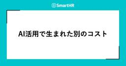
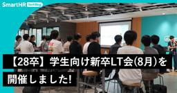
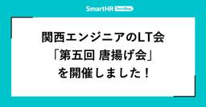

SmartHR Tech Blog
https://tech.smarthr.jp/
SmartHR 開発者ブログ
フィード

AI活用で生まれた別のコスト 1
1
SmartHR Tech Blog
SmartHRで給与計算機能の開発をしているプロダクトエンジニアの@rです。 開発のいたるところでAIが活用されるようになってきました。弊社でも、コーディングはもとよりPRD（プロダクト要求仕様書）の作成、チケットの作成、テスト計画書の作成、ヘルプページの作成ほかあらゆる成果物の作成でAIの利用が当たり前になってきており、私自身も毎日使っています。 AIによって、アウトプットを出す側の時間は大きく短縮され、AIがなかった頃の仕事の仕方にはもう戻れそうにありません。 一方で、成果物の読み手やレビュワーという立場からみると、AIが生成する文章の乱立が別の場所でコストを生んでいるかもしれない、と思う…
5時間前

AIエージェント開発ハンズオンを開催しました
SmartHR Tech Blog
こんにちは、SmartHR AI開発部のbiwakoです。先日、社内向けに「AIエージェント開発ハンズオン」を開催しました。 本ハンズオンは、レストラン予約エージェントを題材に、Tool Call、ReAct、MCP、Skills、エージェントフレームワークまでを段階的に実装する内容です。本記事では、このハンズオンの目的・背景、当日の様子、振り返りを紹介します。 開催の目的・背景 本ハンズオンの目的は、SmartHRのエンジニアや開発に携わる社員が実装を通じてAIエージェントの仕組みを学び、自らAI機能を開発するための第一歩を後押しすることです。AI開発部では、各プロダクトチームがそれぞれのプ…
1日前

品質を支える仕組みをチームで作る —— 開発プロセスの可視化と改善 60
SmartHR Tech Blog
こんにちは！SmartHRでQAエンジニア（QAE）をしているyugeです。前回の記事で触れたDuolingoの連続記録が、ついに1,500日を超えました。日々の小さな積み重ねによって、以前は聞き取りづらかった音が聞こえるようになるなど、着実な変化を実感しています。 今回は、日々の開発プロセスで品質を守れる状態を目指し、チームで進めてきた改善の取り組みを紹介します。 体制変更で見えてきた、従来プロセスの課題 個々の判断に支えられていたプロセス 私は現在、プロダクト基盤ユニット内で権限基盤チームのインプロセスQAとして活動しています。このチームでは、体制が変わり、複数の開発を並行して進めるなど、…
2日前

【28卒】学生向け新卒LT会（8月）を開催しました！
SmartHR Tech Blog
こんにちは！SmartHRでプロダクト基盤の開発をしている、新卒1期生（2026年入社）プロダクトエンジニアのitojumです！ SmartHRでは、2028年入社予定の学生を対象に「新卒3期生」の採用を行っています。 今年からの新たな取り組みとして、SmartHRの新卒エンジニアによる学生向けライトニングトーク（LT）会を開催しました！ 本記事では新卒LT会の様子をお届けします。 新卒LT会の様子 参加者情報 参加してくださった学生: 16名 登壇者: 8名 0期生（2025年入社）: 2名 1期生（2026年入社）: 4名 2期生（2027年入社・内定者）: 1名 サマーインターンシップの…
5日前

関西エンジニアのLT会「第五回 唐揚げ会」を開催しました！
SmartHR Tech Blog
こんにちは。プロダクトエンジニアのゆきです。 2026/07/24に、SmartHR 大阪オフィスで 第五回 唐揚げ会 を開催しました。 この記事では、イベントの模様についてレポートします。 唐揚げ会とは 唐揚げ会とは、関西のエンジニアの交流を目的に、唐揚げを楽しみながらテックな話題などについてラフに話すイベントです。 これまでの開催レポートは以下をご覧ください。 関西エンジニアのLT会『第一回 唐揚げ会』を開催しました！ - 虎の穴ラボ技術ブログ 関西エンジニアのLT会「第二回 唐揚げ会」を開催しました！ - SmartHR Tech Blog 関西エンジニアのLT会「第三回 唐揚げ会」を開…
7日前

SmartHRはKaigi on Rails 2026で学生参加支援（スカラシップ）を実施します！
SmartHR Tech Blog
SmartHR でプロダクトエンジニアをしている @udzura です。 2026年10月16日（金）・17日（土）に、ベルサール渋谷ガーデンにてKaigi on Rails 2026が開催されます。 SmartHR では今回はじめての試みとして、Kaigi on Rails 2026 に参加したい学生のみなさんのチケット代・交通費・宿泊費について、 最大4名 支援します。 この記事では、支援の概要と応募方法についてご案内します。 Kaigi on Rails とは Kaigi on Rails は名前のとおり Ruby on Rails を話題の中心に据えつつ、フロントエンドやプロトコルなど…
8日前
不具合情報の集約基盤を整え、品質改善に活かすまで
SmartHR Tech Blog
こんにちは、SmartHR 品質保証本部 Directorのtarappoです。 最近は組織周りの話を多くしてきましたが、今回は「不具合に関する情報を集める基盤」を整えたことについて、かんたんに紹介しようかと思います。 本記事では「どういった基盤を整えたのか」「今、どこまで整ってきているのか」、そしてそれによって「なにができるようになってきているのか」を順に説明していきます。 不具合に関する情報を集める基盤 組織の規模が小さいうちは、周りで起きていることが見えやすく、大きな問題になる前に対処しやすかったりします。 しかし、会社やプロダクトがスケールしていくと定性データといえる「肌感」だけでおこ…
9日前
「エージェントが対応し、人間が評価する」——SmartHR CREが開発する「DESK AIエージェント」
SmartHR Tech Blog
はじめに こんにちは。SmartHRでCRE（Customer Reliability Engineer）として、プロダクトに関する技術的な問い合わせ対応や改善活動に取り組んでいるs_arikawaです。 SmartHRのCREは、お客さまから寄せられる技術的な問い合わせへの対応や調査だけでなく、そこから得た知見をプロダクトの改善につなげる役割を担っています。CREの立ち上げ背景や具体的な活動については、SmartHRのCREに関する記事一覧やSmartHRのCREチームに興味をお持ちの方へをご覧ください。 なかでも問い合わせ対応では、過去の対応履歴やヘルプページ、仕様書など、さまざまな情報を…
12日前
Sandboxテスト 〜フロントエンドとAI時代の変化の激しさへの挑戦〜
SmartHR Tech Blog
こんにちは。AIアシスタントの開発をしているnukosukeです。最近は競馬の機械学習モデル作りにハマっています。回収率はなんとマイナスです。 今回はフロントエンドのテストとして、AIアシスタントで新しく構築した「Sandboxテスト」の仕組みと構築過程を、具体的なコード例や課題も含めてご紹介します。 Sandboxテストとは？ Sandboxテストはフロントエンドに閉じた結合テスト、とAIアシスタントチームでは定義しています(後述しますが、一般的な名称ではありません)。 具体的には、バックエンド（Rails）を起動せず、PrismによるOpenAPIモックサーバーのみで動かすPlaywrig…
16日前
2年かけてたどり着いた1on1の形 —— メンバーと一緒に1on1の最適解を探る
SmartHR Tech Blog
SmartHRの人給基幹プロダクト開発本部で、チーフ(プレイングマネージャー)をしている山下です。 私は2024年からチーフになり、現在2年が経ちました。 SmartHRでは制度上、評価者と被評価者が隔週で1on1（定期的に行う1対1の対話）を実施するよう決められています。 チーフになりたての頃、メンバーとの1on1に対して苦手意識がありました。 何を話せばいいのかわからない、メンバーにとって有意義な時間になっているのだろうか？ 当時、上長にはそんな相談をよくしていました。 わからないながらも、書籍を読んだり、マネジメント経験のある社内の人の事例を聞いたりすることで自分の中で1on1としての形…
20日前
認証がプロダクトの足かせにならない世界へ —— 認証・認可基盤ユニットの発足と挑戦
SmartHR Tech Blog
こんにちは。SmartHRでプロダクトエンジニアをしているbmf_sanです。プロダクト基盤開発本部の認証・認可基盤ユニットで、チーフを担当しています。 2026年2月、SmartHRに「認証・認可基盤ユニット」という新しいチームが発足しました。その名の通り、SmartHRの認証・認可領域を専任で担うユニットです。 本記事では、なぜSmartHRが今、認証・認可の基盤づくりに改めて本気で取り組むのか、そして私たちのチームが何を目指し、何をやっているのかを紹介します。 認証・認可基盤ユニットとは SmartHRのプロダクト基盤開発本部は、権限管理・課金・従業員データ活用など、プロダクト横断の基盤…
21日前
IT Women Summit —— テクノロジーの力で、組織と未来を動かす女性たちレポート
SmartHR Tech Blog
こんにちは。SmartHRのアクセシビリティ部マネージャーの坂巻です。SmartHRは、2026年5月26日にオンラインで開催された「IT Women Summit —— テクノロジーの力で、組織と未来を動かす女性たち」にオンライン支援スポンサーとして協賛しました。 また、アクセシビリティ部から私、坂巻が専門性を「組織の力」へ組み替える、エキスパートの仕事というタイトルで登壇させていただきました。当日の発表をご視聴いただいた皆様、ありがとうございました。 IT Women Summitとは？ IT Woman Summitは、翔泳社が主催する、IT領域で活躍する女性を応援するためのカンファレン…
23日前
本を書くハッカソンイベントBookathon Vol.2レポート —— 週末だけで6冊が完成！
SmartHR Tech Blog
SmartHRは、2026年7月10日（金）から12日（日）にかけて東京・六本木のSmartHR Spaceで行われた「Bookathon Vol.2 - 本を書くハッカソンイベント」に協賛しました。 本レポートでは、その模様をお届けします。 目次 目次 Bookathon - 本を書くハッカソンイベントとは おやつを全紹介！ Day 1 —— キックオフ、チーム編成、環境構築 Day 2 —— 執筆、編集者アドバイス Day 3 —— 執筆、発表会、表彰式、懇親会 最後の追い込み 発表会 審査 表彰式 懇親会 SmartHRメンバーの感想 itojumさん naoh_nakさん まとめ We…
23日前
Innovative Crosstalk Jamboree Geeks’26に参加・登壇してきました！
SmartHR Tech Blog
こんにちは！SmartHRの業務連携基盤ユニットでプロダクトエンジニアをしているいとじゅんです！SmartHRの新卒1期生として2026年に入社しました。 先日8月2日に開催された「Innovative Crosstalk Jamboree Geeks’26」に参加して、30分セッションで登壇してきましたので、登壇のお話や聴講させていただいたセッションなどを紹介します！ 「Innovative Crosstalk Jamboree Geeks’26」とは このカンファレンスは、AI活用と異文化交流をテーマに掲げて開催されました。技術の共有だけでなく、エンタメや新しいテーマへの挑戦を重視している…
1ヶ月前
第17回SmartHR LT大会レポート ── カンファレンス土産と自作ツールが集結！
SmartHR Tech Blog
こんにちは。SmartHRで給与計算機能を開発している nobu です。 この記事では、2026年6月19日に開催した第17回SmartHR LT大会の模様を、NGTさん・mashi6nさんと共にお届けします。 目次 目次 SmartHR LT大会とは 参加者情報 発表レポート ドメエキの話をちゃんと聞こう！（qwyng さん） bloghrの“真実”（osyoyu さん） TSKaigi 2026 にいってきたよ（kazuemon さん） Google Slideをやめたい（nori さん） RubyistがLaravel Live Japan行ってきましたレポ（mktakuya さん） は…
1ヶ月前
SmartHR最大のRailsアプリケーションにコネクションプーラーを導入しました！── 2年前の障害対応から学んだスケーラビリティと運用のリアル
SmartHR Tech Blog
こんにちは。スケーラビリティエンジニアリングユニットの @kawaida です。 最近、トークンマキシングならぬポケモンマキシングをして、ぽこあポケモンの図鑑コンプしました。（時が過ぎるのははやい） ２年前には「基本機能」と呼ばれる SmartHR 最大の Rails アプリケーションに、コネクションプーラーを導入しました。 この記事では、導入にあたって検討した技術的な背景や選定理由をご紹介します。 背景 SmartHR の「基本機能」では Cloud Run を使用しており、リクエスト数や負荷の増加によってオートスケールします。 サービスの成長に伴ってトラフィックが増えると、スケールアウトし…
1ヶ月前
SmartHRの信頼性を支える —— 人事マスタエリアのQAエンジニアが今取り組んでいること
SmartHR Tech Blog
こんにちは。SmartHR品質保証本部、人事マスタユニットのkanna、kaomiです。 2026年3月に公開した「SmartHRの人事マスタを守る —— QAエンジニアとして挑む、品質保証の現場」では、人事マスタユニットが抱える品質保証の課題と、それに向き合うために始めた取り組みを紹介しました。 前回の記事から数か月が経ち、私たちは開発チームとともに、品質リスクを開発の早い段階で見つけ、継続的に改善する仕組みづくりを進めています。この記事では、前回お伝えした取り組みの続編として、人事マスタエリアで求められる品質保証と、QAエンジニアが現在どのように「信頼性」を支えているかを紹介します。 人事…
1ヶ月前
きのこカンファレンス 2026 in 関西参加レポート —— それぞれのキャリアの縁側を垣間見た夏
SmartHR Tech Blog
こんにちは、プロダクト基盤開発部のR&Dユニットでプロダクトエンジニアをしているydahです。 2026年8月1日（土）に大阪のBlooming Campで開催された「きのこカンファレンス 2026 in 関西」に参加し、「わからない話を追いかけたら、プログラミング言語を作る側にいた」というタイトルで登壇しました。 luccafort.connpass.com この記事では、きのこカンファレンス 2026 in 関西の雰囲気と、発表した内容、参加して感じたことを書きます。 きのこカンファレンス 2026 in 関西の会場となったBlooming Campのエントランスエリア きのこカンファレン…
1ヶ月前
横断フロントエンドユニットの取り組み —— 技術的負債の解消から AI 活用まで
SmartHR Tech Blog
こんにちは、SmartHR でプロダクトエンジニアをしている negiandleek と sakata です。 私たちは横断フロントエンドユニットに所属し、SmartHR 基本機能のフロントエンドに関する課題解決に取り組んでいます。 本記事では、横断フロントエンドユニットが組成された経緯とこれまでの取り組み、そして将来的な展望を紹介します。 横断フロントエンドユニットが組成された経緯 SmartHR の基本機能は、従業員情報の管理を担う基盤となるプロダクトで、歴史が古く大きなものです。 そのため、以下のような課題を抱えていました。 全体的にモジュールバージョンが古く、更新されていないため、セキ…
1ヶ月前
SmartHR全体のAI開発を加速する —— これからのAI開発部が担う3つの役割
SmartHR Tech Blog
はじめに こんにちは！技術統括本部AI開発部でEMをしているbiwakoです。2026年4月に入社し、4ヶ月が経過しました。 入社前はSmartHRに馴染めるか不安でいっぱいでしたが、素晴らしいカルチャー・同僚のおかげで「まだ4ヶ月か」と思うほど濃い時間を楽しめています。 AI開発部では現在、AI開発を一部の専門チームに閉じず、各プロダクトチームが安全かつ迅速に実践できる体制作りを進めています。 この記事では、AI開発部が目指す体制と、これから入社する方が挑戦できることをご紹介します。 なお、この記事での「AI開発」とは、AI機能やAIプロダクトの開発を指します。注釈がない限りは「Coding…
1ヶ月前
関西Ruby会議09レポート —— 前夜祭、本編、Official Party
SmartHR Tech Blog
SmartHRは、2026年7月18日に滋賀県・大津市伝統芸能会館で開催された関西Ruby会議09にSilver Sponsorとして協賛し、13名が参加、2名が登壇、1名が運営に携わりました。 この記事では、前後イベントも含め、その模様をmottyとudzuraで手分けしてお届けします！ 会場の大津市伝統芸能会館 前夜祭 関西Ruby会議09では、前夜祭は2箇所で開催され、好きな方に参加可能な形でした。 kyotorb.connpass.com kyobashirb.connpass.com udzuraは日本酒に釣られて下田屋さんで開催された前夜祭に参加しました。滋賀は日本酒が本当に有名で…
1ヶ月前
AIで実装速度が倍になったら、プランニングとリファインメントが悲鳴をあげた
SmartHR Tech Blog
こんにちは！ SmartHRでプロダクトエンジニアをしている wakasa です。 最近はAIを使った開発が盛んになり、私が所属する「グループ企業管理」というチームでも、Claude Codeを使った開発が中心になっています。 この記事では、開発のAI活用を進めていたら、（スプリント）プランニングと（バックログ）リファインメントが大変なことになって、それを改善した取り組みを話したいと思います。 AI活用が進む前の開発 グループ企業管理チームでは、1週間を1スプリントとするスクラムを採用しています。 チームは4人で、AI活用が進む前のチケット消化量は、チケットに割り当てたストーリーポイントにもよ…
1ヶ月前
ディスカバリーリードに挑戦して学んだこと 〜プロダクトエンジニアが上流工程を主導するまで〜
SmartHR Tech Blog
こんにちは！SmartHRでプロダクトエンジニアをしているAtsuです。2025年9月に入社し、それから約半年間は開発メンバーとしてプロダクト開発に携わってきました。 そんな中、あるプロジェクトをきっかけに、ディスカバリー（何を作るかの検討）からソリューションレビュー（解決策の妥当性を評価しGo/No-Goを判断する意思決定ゲート）までを主導する「ディスカバリーリード」という役割を初めて担当することになりました。これまでプロダクトエンジニアは、仕様がある程度固まった後のフィーチャーリードを担うことが多かったのですが、この取り組みではより上流からプロダクトづくりに関わることになります。 結果とし…
1ヶ月前
開発チームにノウハウが残るSREの関わり方 —— 年末調整のピークに備えた負荷試験
SmartHR Tech Blog
こんにちは！SmartHRでSREをしております樋口と申します。 本記事では、2026年上期のSRE活動の一環として、年末調整チームと共同で実施した負荷試験の取り組みを紹介します。 具体的には「負荷試験のノウハウをいかに開発チームへ定着させたか」という組織的・プロセス的なアプローチにフォーカスしてお伝えします。 前提：年末調整チームとSREチームの状況 今回の活動の背景として、それぞれのチームが抱えていた状況をお話しします。 年末調整チームの課題 年末調整というドメインの特性上、9〜11月にトラフィックのピークを迎える一方で、それ以外の時期はアクセスがほとんどありません。そのため、「平常時のト…
1ヶ月前
CRE Camp #6 参加レポート —— アンカンファレンスがイベントの "顔" になってきた！
SmartHR Tech Blog
こんにちは！ CRE（Customer Reliability Engineering）部の a-know こと井上です。毎日暑いですね。私事ですが、これまでのチーフという役割に加えて、7月からCRE部のマネージャーも務めることになりました。暑さに負けず、頑張っていきたいと思っています！ さて、去る7月17日（金）に株式会社アシュアードさんのオフィスを会場としてお借りして、CRE Camp #6が開催されました！ cre-camp.connpass.com 会場入口に用意していただいていた立て看板 今回も、私は CRE Camp のコアメンバーとして運営・参加をしてきましたので、今日はその開催…
1ヶ月前
プロダクトエンジニアのAI機能開発の取り組み
SmartHR Tech Blog
こんにちは！SmartHRのAI開発部のAIインテグレーションユニットで、プロダクトエンジニアをしているkakifryです。2025年7月に入社し、ちょうど1年が経ちました。 前職では求人サイトのレコメンド領域でAPI開発に携わっていました。AIに関わる仕事ではあったものの、AIをプロダクトとして届ける上流から関わりたいという気持ちがあり、AI専任チームへの入社を決めました。 1年過ごしてみて感じているのは、研究開発に留まらず、製品への適用からスケールまで一気通貫で携われる点が、このチームの面白さだということです。PoC（概念実証）を作って終わりではなく、それをユーザーが実際に使えるプロダクト…
1ヶ月前
SRE NEXT 2026レポート —— 協賛、参加、登壇
SmartHR Tech Blog
こんにちは！SmartHRのSREをしてます中間（@kekke_n）です！ SmartHRは2026年7月10日（金）・11日（土）にTOC有明で開催された「SRE NEXT 2026」に参加してきました！また、ランチスポンサーセッションでは私、中間が登壇しました！ この記事では、イベントの模様と登壇内容についてレポートします。 SmartHR参加メンバーの集合写真 SRE NEXT 2026とは SRE NEXTは、信頼性に関するプラクティスに関心を持つエンジニアのためのカンファレンスです。 2026年のテーマは「Inclusive SRE」で、経験豊富な SRE（Site Reliabil…
2ヶ月前
半期をふりかえり、来期を考える「QA Summit」を開催しました
SmartHR Tech Blog
こんにちは、SmartHR 品質保証本部 Directorのtarappoです。 品質保証本部では半期*1に1度「QA Summit」という会を開催しています。 先日、FY26上半期のQA Summitを開催しました。 本記事では、発表内容の詳細については社内情報を含むため紹介できませんが、QA Summitをどういった目的で、どのように開催しているのかを紹介します。 QA Summitとは QA Summitとは、品質保証本部に所属するQAEのメンバー全員が集まって、半期のふりかえりと来期なにをやるかを共有する場です。 リモートワークがメインな働き方をしているなかで、同じ専門性を持つメンバー…
2ヶ月前
「TSKaigi 2026事後勉強会」を開催しました
SmartHR Tech Blog
こんにちは！ SmartHRでプロダクトエンジニアをしている tokky です。 この記事では、先日開催した「TSKaigi 2026事後勉強会」の様子をお届けします。 TSKaigi 2026事後勉強会アイキャッチ 目次 目次 開催概要 オープニング TSKaigiへの参加が初めてだった方のLT Vite+を爆速で社内デザインシステムに導入してみた なぜ型を書くのか？ TSKaigi2026で改めて考える 共通化で考えるべきは、実装より公開する型だった TSKaigiへの参加が2回目以上だった方のLT a11yのルール違反をコンパイルタイムで明確にしてみた話〜LSP〜 UIパーツの設計を「型…
2ヶ月前
Engineering Manager Meetup #19 〜 エンジニア組織とお金のお話しレポート
SmartHR Tech Blog
こんにちは。SmartHRでタレントマネジメント領域のEngineering Managerをしている @tweeeety です。少し時間が経ってしまいましたが、2026年1月30日にSmartHRのイベントスペースにて「Engineering Manager Meetup #19〜エンジニア組織とお金のお話し」というイベントを開催しました。 この記事では、イベントの様子をレポートします。 Engineering Manager Meetupとは Engineering Manager Meetupは、エンジニアリングマネージャーをテーマに、さまざまなトピックについて語り合うイベントです。 e…
2ヶ月前